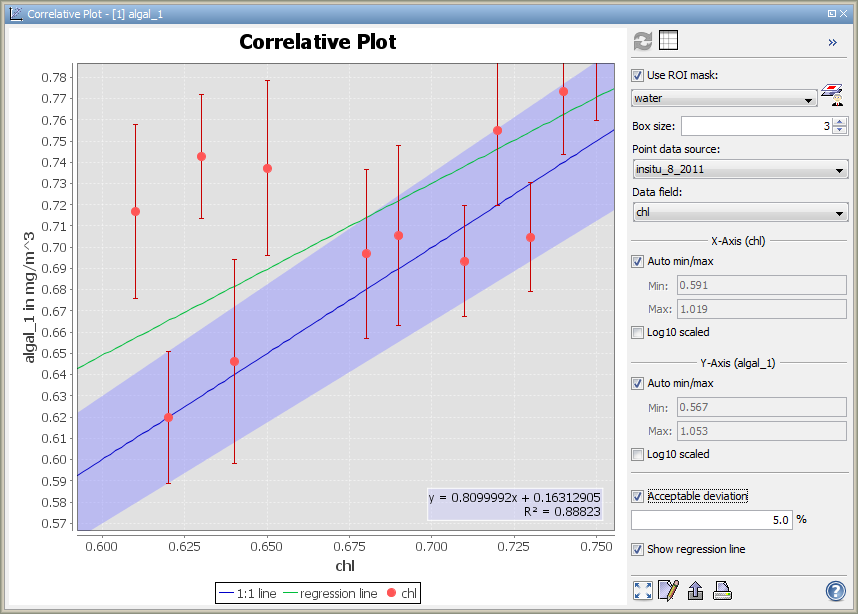
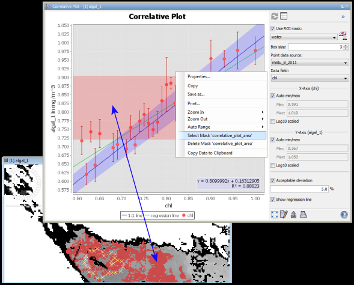

Correlative Plot Display
This dialog allows you to plot an imported variable (e.g. a ship track) against a raster variable.
In order to plot them, these variables must be already imported into the product which contains the
correlative raster data.
You can select an existing or new defined ROI mask to filter which data should be displayed at the plot.
(e.g. if you select a water mask, only as water classified raster data are displayed correlative with
the imported data.)

Options Panel
You can Collapse/Expand the options panel by cklicking to the button
 or
or  at the top right place on the correlative plot display.
at the top right place on the correlative plot display.
The outcome of the correlative plot can be altered via the options in the options panel.
- Refresh View

This button is disabled, because it is not needed at the correlative plot. If any value at the options panel
has changed, the plot will automatically be recomputed.
- Table View

Shows the calculated data of the plot in a Table View which provides
information about the data displayed in the plot. From there, you will be able to switch back to
the correlative plot.
- ROI Mask
A ROI mask may be used to mask out values. All values which do not match the mask are
not taken
into account. For convenience, the mask manager may be openened from the correlative plot
window using the
 -button.
-button.
- Box Size (Standard deviation)
The error bars, as you can see in the image above, indicate the standard
deviation (see http://en.wikipedia.org/wiki/Standard_deviation#With_sample_standard_deviation)
of the correlative raster pixel within a square box. The edge length
of that square box can be set to any odd value between 1 and 101.
The selected raster variable is either the one currently selected in
the Product View or the currently selected
Image View.
- Point Data Source
At this place you have to select the imported reference data. Reference data can be
imported in several ways.
See import of CSV data, ESRI Shapefiles,
MERMAID Extraction Files and
SeaDAS Ship Tracks.
- Data Field
Select the reference data, which should be displayed correlative to the selected
raster variable.
- X-Axis (Reference axis)
Reference values are assigned along the x-axis. If a reference data column is selected,
the name of the selected reference data field is displayed in the header-line of the
x-axis area.
- Auto min/max
You can explicitly set the minimum and maximum values to be considered during
the computation of the correlative plot. To do so, uncheck the checkbox and
enter the desired min- or max-value. When the checkboxes is checked , min-
and max-values will be determined automatically.
- Log10 Scaled
Causes the x-axis to be log10 scaled.
- Y-Axis (Raster axis)
Raster values are assigned along the y-axis. If a raster value is selected, the name
of the selected raster value is displayed in the header-line of the y-axis area.
- Auto min/max
You can explicitly set the minimum and maximum values to be considered during
the computation of the correlative plot. To do so, uncheck the checkbox and
enter the desired min- or max-value. When the checkboxes is checked , min-
and max-values will be determined automatically.
- Log10 Scaled
Causes the y-axis to be log10 scaled.
- Show Tolerance Range
Shows the user defined tolerance range as a blue shade along the 1:1 line. The tolerance range is only a
visualisation tool, which causes no effects to computation.
- Show Regression Line
Displays a regression line which has been calculated with the ordinary least squares method
(see http://en.wikipedia.org/wiki/Ordinary_least_squares).
Also the coefficient of determination (see http://en.wikipedia.org/wiki/Coefficient_of_determination)
and the linear equation are displayed in the plot.
- Zoom all

Adjusts both axes to the full data range.
You can also use the 'Auto range' entry in the context menu.
- Edit Properties

Edit several properties (colors, axes, etc.) of the diagram.
You can also use the 'Properties...' entry in the context menu.
- Save chart as image

Save the diagram as image (PNG).
You can also use the 'Save as...' entry in the context menu.
- Print chart

Print the diagram.
You can also use the 'Print...' entry in the context menu.
- Help

Displays this page.
Context Menu
A click with the right mouse button on the diagram brings up a context menu
which consists of the following menu items:
- Properties...
Edit several properties (colors, axes, etc.) of the diagram.
You can also use the on the right 'Plot' panel.
- Copy
Copies the diagram as image into the clipboard.
- Save As...
Save the diagram as image (PNG).
You can also use the on the right 'Plot' panel.
- Print...
Print the diagram.
You can also use the on the right 'Plot' panel.
- Zoom In
- Both Axes - Zoom in on both axes.
You can also zoom in by drawing a rectangle. Click at the top left corner of your desired zooming area,
drag to the bottom right corner, and release. Note that this won't work when
'Select Mask 'scatter_plot_area'' is selected.
Also you can immediately zoom in/out using the mouse wheel.
- Domain Axes - Zoom in only on the domain axis.
- Range Axes - Zoom in only on the range axis.
- Zoom Out
- Both Axes - Zoom out on both axes.
- Domain Axes - Zoom out only on the domain axis.
- Range Axes - Zoom out only on the range axis.
- Auto Range
- Both Axes - Adjusts both axes to the full data range.
You can also use the on the right 'Plot' panel.
- Domain Axes - Adjusts the domain axis to the full data range.
- Range Axes - Adjusts the range axis to the full data range.
- Select Mask 'correlative_plot_area'
Allows you to create a mask from the correlative plot.
After selecting the menu entry, you can choose a zone by clicking in the plot, dragging, and releasing.
The mask will be selected immediately.

- Delete Mask 'correlative_plot_area'
Removes the mask 'correlative_plot_area' (in case you have created it before).
- Copy Data to Clipboard
This will copy the diagram data as tabulated text to the system clipboard.
The copied text can then be pasted directly into a spreadsheet application
(e.g. Microsoft® Excel).